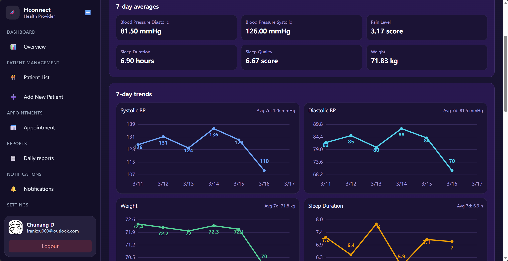

I am a graduate student in the Information Security stream at Northeastern University, Toronto,
with a software engineering foundation from the University of Toronto. This portfolio highlights
the strongest examples of my technical execution, security mindset, and growth toward IT leadership roles.
Information SecurityFull-stack DevelopmentSystems and Cloud SecurityApplied Problem Solving
About Me
Academic background, professional direction, and what I bring to technical teams.
I am Chunang Xu, an MPS in Informatics candidate focused on Information Security.
My background combines software engineering, secure system design, and practical full-stack delivery.
Across internships and project work, I have built production-oriented solutions in threat intelligence,
test automation, and healthcare workflows.
My career goal is to contribute in security-focused software and IT leadership roles where I can connect
engineering execution with business outcomes, especially in domains that require both reliability and compliance.
Education Highlights
Northeastern University, Toronto - Master of Professional Studies in Informatics (Information Security), Sep 2024 - Jun 2026
University of Toronto Scarborough - Honours BSc, Computer Science (Software Engineering), Sep 2018 - Jun 2024
Dean's List recognition (2019)
Relevant focus: databases, secure systems, networking, ethical hacking, and software development
Resume and Professional Snapshot
Summary of current experience for recruiters and hiring managers.
Current Resume Summary
Network Security Intern, Alibaba Group (Jul 2025 - Sep 2025): built an automated IOC intelligence collection platform with API integration, web scraping, PostgreSQL storage, and SIEM/IDS-IPS correlation workflows.
Assistant Engineer, Huawei Technologies Canada (May 2022 - May 2023): reimplemented and optimized a load testing algorithm from R to Python with approximately 2.5x performance improvement; contributed to CI/CD and production integration.
Designed and implemented doctor and patient workflow modules, including role-based dashboards, patient registration, profile management, and appointment/reporting pages.
Built and integrated secure backend APIs using Express and PostgreSQL for account data, match requests, health reports, patient advice, and security metadata retrieval.
Integrated Auth0 authentication and account operations, including password reset email flow, access-token based authorization, and protected API access patterns.
Implemented regional data boundary controls with configurable policy switches and country-aware user identity handling for doctor-patient relationship workflows.
Deployed and hardened production infrastructure with Nginx, PM2, HTTPS, and schema consistency fixes; resolved cross-environment defects to stabilize release behavior.
ReactNode.js/ExpressPostgreSQLAuth0Secure API Design

Dashboard snapshot provided by author: 7-day averages and trend charts for blood pressure, weight, pain level, and sleep metrics.
HConnect frontend screenshot: doctor-facing analytics dashboard for patient monitoring.
Reflection and impact: This capstone strengthened my ability to deliver end-to-end features under real deployment constraints.
I learned to align UX decisions, security rules, and data consistency so that both doctor and patient journeys remain reliable in production.
Automated IOC Intelligence Collection Platform
Role: Network Security Intern | Alibaba Group
Implemented multi-source IOC ingestion with APIs, BeautifulSoup, and regex-based parsing for large-scale threat data collection.
Designed modular data processing and PostgreSQL storage to support high-frequency querying and incremental synchronization via cron.
Supported architecture documentation and security analytics integration with SIEM and IDS/IPS pipelines.
PythonThreat IntelligencePostgreSQLSIEM
Reflection and impact: I learned how to convert fragmented external threat signals into structured intelligence usable by operational security systems.
Reimplemented a research algorithm from R to Python using NumPy vectorization and multiprocessing for significant runtime improvement.
Built preprocessing and sequence-modeling utilities for multi-GB logs, and supported data interface standards with product teams.
Added unit testing and GitLab CI/CD verification to improve confidence and release quality.
PythonPerformance OptimizationCI/CDTesting
Reflection and impact: This project improved my ability to bridge research outputs and production constraints while keeping measurable performance goals.
Show Time - Social Networking Web App
Role: Full-stack team member | 3-person project
Implemented account workflows with Auth0 and JWT-based auth for secure sign-up, sign-in, and role-based access handling.
Built real-time direct messaging using WebRTC and WebSocket.
Implemented backend routing, CRUD operations, and middleware-based authentication and authorization.
WebRTCWebSocketJWTFull-stack Web
Reflection and impact: This project taught me practical real-time application architecture and secure session design beyond basic web CRUD.
Pintos Educational Operating System Framework
Role: Systems programming contributor
Implemented thread blocking, priority scheduling, process waiting, and synchronization behavior in kernel modules.
Implemented virtual memory components, including paging and swap slot management.
Built file-system buffer cache optimization for improved read/write performance.
COperating SystemsConcurrencyMemory Management
Reflection and impact: I developed stronger reasoning for low-level correctness, synchronization, and performance trade-offs under constrained environments.
Skills and Endorsements
Technical and professional capabilities developed across coursework, internships, and projects.
Programming and Data
Python, Java, C, JavaScript, SQL, R, MATLAB
Data cleaning, transformation, and automation workflows
Algorithm implementation and optimization
Web and Platform
React, Node.js/Express, Spring Boot, HTML/CSS
Auth0, JWT, WebSocket, WebRTC
RESTful API design and integration
Security and Systems
Network security fundamentals and cloud protection concepts
PostgreSQL, Git/GitHub, Jira, CI/CD pipelines
Operating systems and concurrency fundamentals (Pintos)
Reflection and Professional Growth
Through my MPS journey, I transitioned from primarily course-driven development to production-minded engineering.
I improved in three areas: end-to-end delivery, secure design decisions, and communication across technical stakeholders.
The capstone and internship experiences taught me how to turn ambiguous requirements into deployable systems,
balance speed with reliability, and evaluate trade-offs between user experience and security controls.
Going forward, I aim to deepen expertise in cloud security architecture and move toward technical leadership roles
where I can mentor teams while building secure, scalable software products.